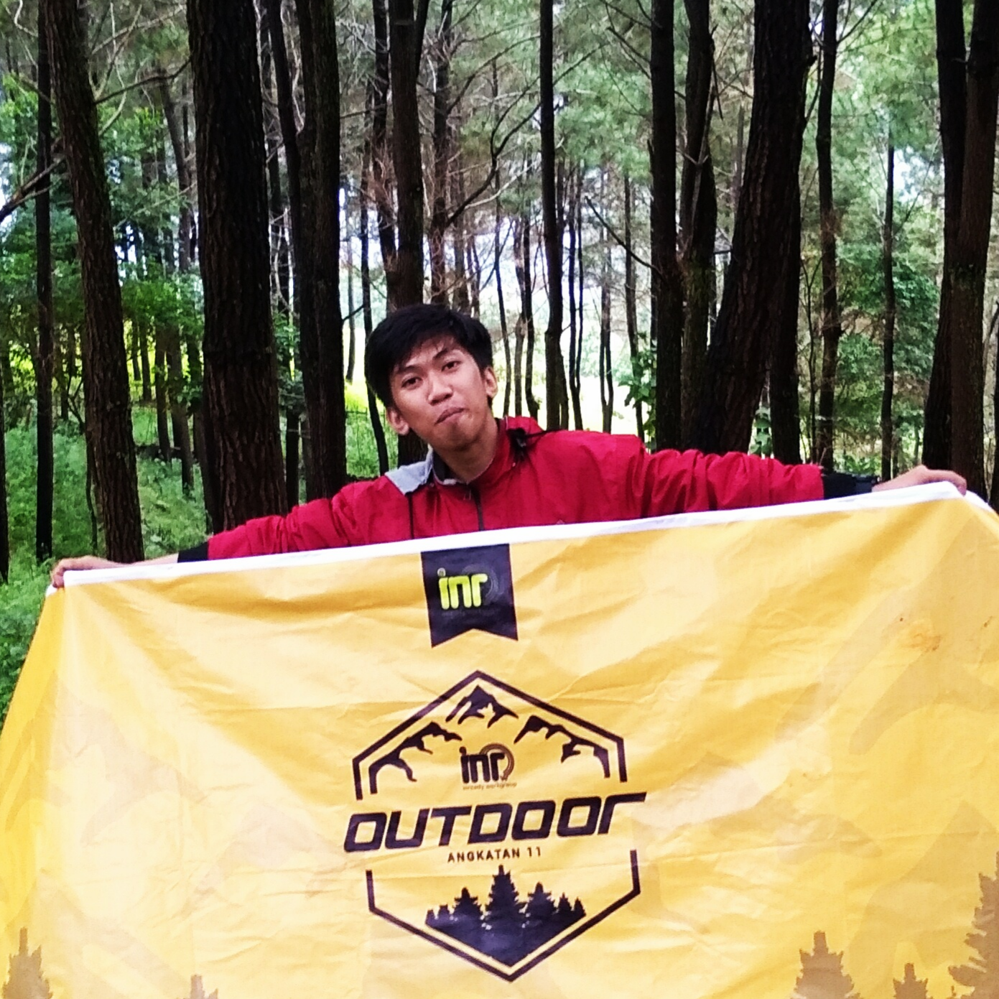

AndhyDev
Alauddin Makassar Islamic University Students

Alauddin Makassar Islamic University Students
Member Study Club
Maret 2018 - Sekarang
Inready Workgroup adalah sebuah study club yang ada pada Universitas Islam Negeri Alauddin Makassar. inready Workgroup memiliki tiga pemebelajaran, yakni Design, Mobile Programmer dan Web Developer. Anggota Inready Workgroup dari jurusan Teknik Informatika dan Sistem Informasi
Lomba Hackathon 2018
21-22 April 2018
Sebuah ajang kompetisi pembuatan aplikasi komputer (software), lomba pembuatan aplikasi dalam 1x24 jam. Hack the Tourism ini diinisiasi oleh Dinas Pariwisata Kota Makassar. Di mana sebanyak 50 tim dari berbagi kampus dan komunitas pengembang aplikasi turut berkompetisi dalam lomba Hackathon ini.
Kunjungan Industri
28 April 2019
Suatu kegiatan tahunan yang dilakukan oleh study club Inready Workgroup. Kegiatan kunjungan industri ini akan menunjukkan tentang banyak hal yang ada dalam lapangan kerja. Dalam kujungan itu kami diajari dari dtc tentang front end Dev dan teknik pembeajaran dengan baik supaya menjadi Programmer Expert
Meet Up With Digital Talent
11 Oktober 2019
Jumat kemarin untuk pertama kalinya dtc academy mengadakan "Meetup with digital talent" bertempat di Secangkir Kopi bersama Ray Yapari sebagai UX Engineer di Tokopedia. dtc juga kedatngan Founder Sekolah Koding dan Founder Mall Sampah Yang menambah keseruan sharing pengetahuan di meetup kali ini.